An Introduction to the rphylopic R package
2026-10-14
By the end of this module, you will be able to:
What is it
How it works
Key features
Data visualisation is a key component of any scientific data analysis workflow and is vital for the summarisation and dissemination of complex ideas and results. In ecology and evolutionary biology, data are often associated with taxonomic entities. However, taxonomic nomenclature, which is fundamental to the biological sciences, is often unfamiliar to nonspecialists. Silhouettes act as a compact visual shorthand. In a phylogeny, a diversity-through-time plot, or a multi-panel figure comparing groups, they help readers identify taxa at a glance and reduce the need for long labels. They are also valuable in teaching and outreach materials, where they make otherwise abstract plots more engaging and accessible.
The rphylopic package can be installed from CRAN (recommended) or its dedicated GitHub repository if the development version is preferred. To install via CRAN, simply use:
To install the development version, first install the remotes package, and then use install_github() to install rphylopic directly from GitHub.
Before we get to the good stuff, a quick note on behalf of all developers. Behind every open-source package is a group of people who build, maintain, and support it, often in their own time and often without much recognition. If you use rphylopic in your research, please cite the associated publication. Citations are one of the main ways this kind of work is acknowledged, and they help us keep maintaining and improving the package so that you can keep doing your research (read more on this topic). You can access the appropriate citation via:
Depending on the licence, you may be legally required to credit the creators of the silhouettes you use (see Get attribution). But whatever the licence, it’s good practice to give credit where it’s due.
Every silhouette available via PhyloPic has a universally unique identifier (UUID). The first step to get a PhyloPic silhouette into R is to get a UUID. To do so via rphylopic you can use the get_uuid() function to search PhyloPic based on a taxonomic or phylogenetic name (e.g. Canis lupus) and return the first matched UUID. Using the returned UUID, you can then fetch the respective silhouette using get_phylopic(). However, multiple silhouettes (and hence UUIDs) can exist for a searched name. The n argument in get_uuid() allows you to fetch n matched UUIDs.
As multiple silhouettes can exist for a searched name, it can be difficult to pick the correct UUID, especially without visualising the images. The pick_phylopic() function plots all requested silhouettes and provides an interactive menu to allow you to select the right image for you.
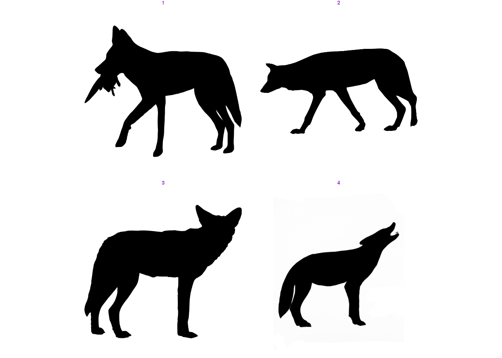
Let’s go with option #1!
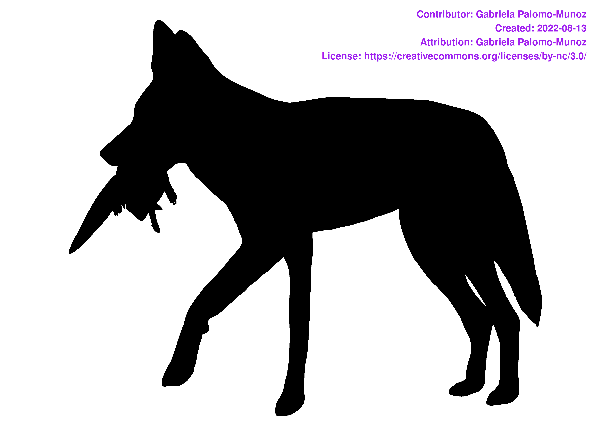
Now let’s inspect the returned object, you can see we have information about the format (vector), dimensions, the UUID, and the URL of our silhouette:
Remember, there may be multiple silhouettes available!
Now we have selected our silhouette, we can start to make some plots!
Let’s start with base R by using add_phylopic_base():
# OK, now that we've got the image we want... let's add it to a plot!
plot(x = 1, y = 1, type = "n", ann = FALSE)
add_phylopic_base(img = img, x = 0.75, y = 0.75, height = 0.25)
# But can't we just add an image straight away using the UUID? Sure!
uuid <- get_uuid(name = "Canis lupus", n = 1)
add_phylopic_base(uuid = uuid, x = 1, y = 1, height = 0.25)
# What about just using the first image linked to the name? Definitely!
add_phylopic_base(name = "Canis lupus", x = 1.25, y = 1.25, height = 0.25)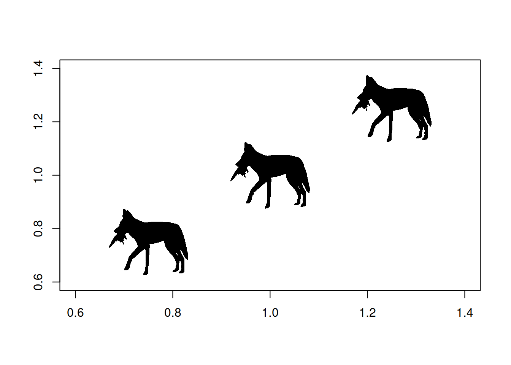
Ah, you’ve found out our little secret! You can actually skip the steps of getting the UUID altogether by just searching for the desired taxon in add_phylopic_base(). However, this will always return the first matched silhouette meaning you might be missing out on all the other options! It’s always worth checking out your options with pick_phylopic() first.
Plot a silhouette of your favourite species using the three different input argument options (img, uuid, and name), all within the same plot.
You can also accomplish the same plot with the ggplot2 package. Here, we’ll use the add_phylopic() function, but the functionality and all of the arguments are equivalent:
# Load library
library(ggplot2)
# Create plot and add phylopic
p <- ggplot() +
coord_cartesian(xlim = c(0.6, 1.4), ylim = c(0.6, 1.4)) +
add_phylopic(img = img, x = 0.75, y = 0.75, height = 0.25)
# But can't we just add an image straight away using the UUID? Sure!
uuid <- get_uuid(name = "Canis lupus", n = 1)
p <- p + add_phylopic(uuid = uuid, x = 1, y = 1, height = 0.25)
# What about just using the first image linked to the name? Definitely!
p + add_phylopic(name = "Canis lupus", x = 1.25, y = 1.25, height = 0.25)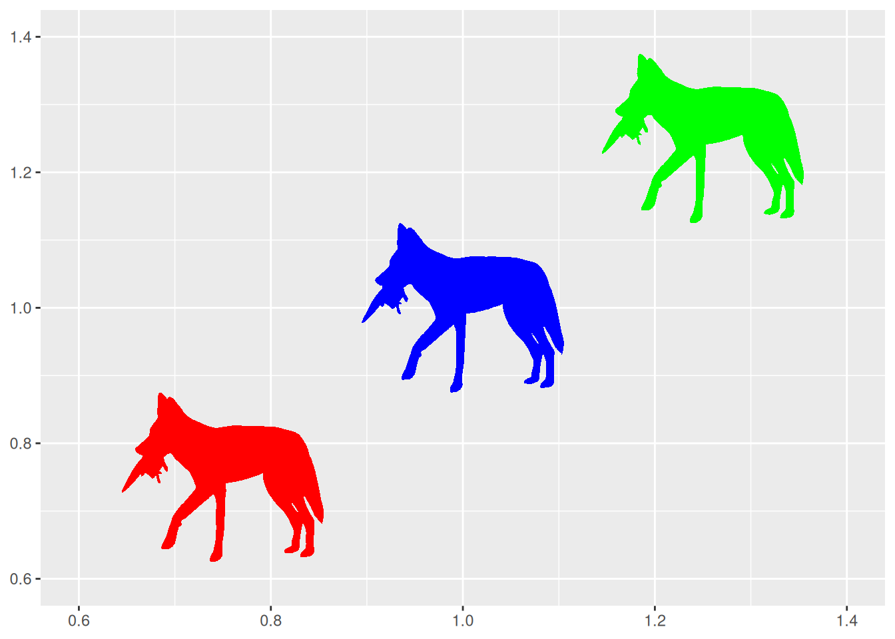
Plot a silhouette of your favourites species using the three different input argument options (img, uuid, and name), all within the same plot.
Once a silhouette is picked and saved in the your R environment, it may be useful to transform the image to better suit the particular visualisation of interest. Three user-friendly functions are available to accommodate transformations that might be desired: flipping, rotating, and recolouring.
The flip_phylopic() function can be used to flip a silhouette horizontally and/or vertically. This may be useful if, for example, you want all of the silhouettes to face the same direction:
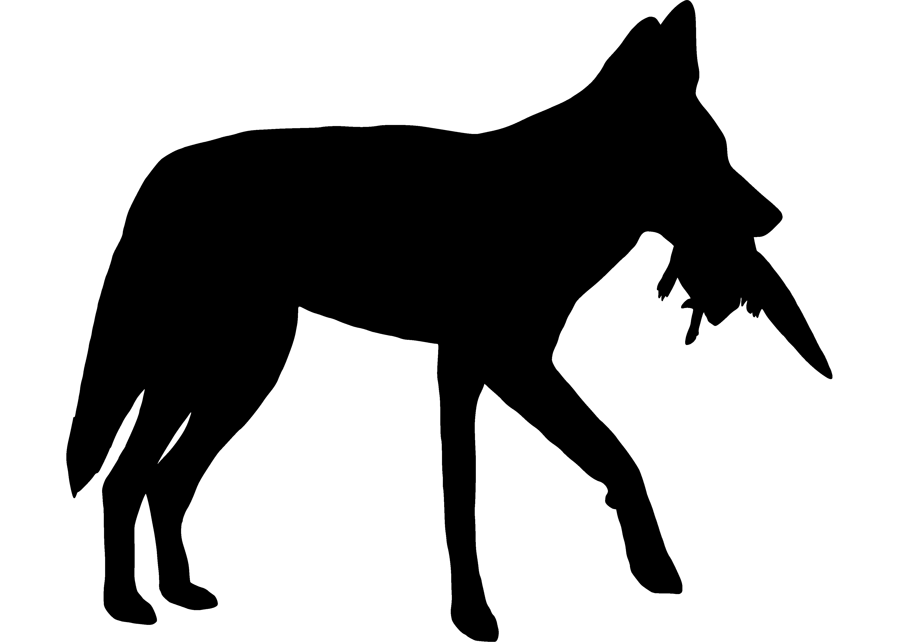
The rotate_phylopic() function can be used to rotate a silhouette an arbitrary number of degrees. This may be useful when trying to align a silhouette with text or other objects within a figure:
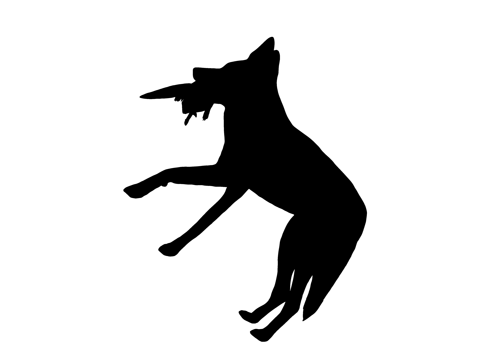
Finally, the recolor_phylopic() function can be used to modify the fill colour, outline colour, and/or transparency of a silhouette. The vast majority of PhyloPic silhouettes are solid black, are fully opaque, and have a transparent outline by default. However, it may be useful to change this when the you are trying to either match an existing visualisation colour palette or trying to convey extra information, such as categorical data, through colour:
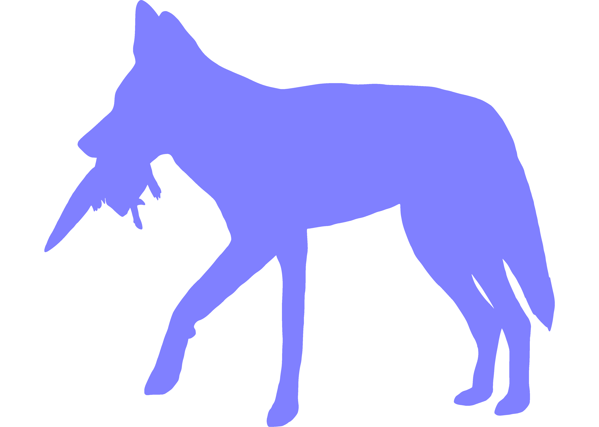
Let’s see what those look like altogether:
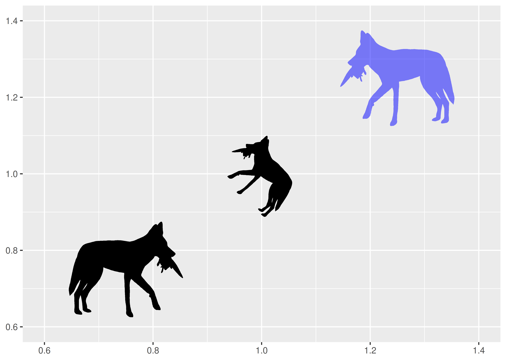
You’ll notice that the rotated silhouette is smaller than the other two silhouettes. This is because we’ve specifed the height of our silhouettes. The width is then automatically set to maintain the original aspect ratio of the silhouette. In this case, the aspect ratio of the rotated silhouette has changed, so the same height results in a smaller silhouette overall. If you’d prefer, you could also specify the width of the silhouettes.
For convenience, we have also included these transformation options within all of the visualization functions. The default fill is “black”, hence why we needed to specify fill = "original" above. Similarly, the default alpha value is 1, so we also need to specify our desired alpha. However, when the same transformed silhouette will be used for multiple visualisations, we suggest transforming the silhouette first, saving it as a new object, then using this new object for visualisation purposes.
It’s your turn! After fetching your favourite silhouette (recall: pick a silhouette), try transforming it by:
Once you have done that, try visualising them altogether.
$images
$images$`7f877a9e-53d7-48d0-a422-d3fa0ff5e2f9`
$images$`7f877a9e-53d7-48d0-a422-d3fa0ff5e2f9`$attribution
[1] "Mareike C. Janiak"
$images$`7f877a9e-53d7-48d0-a422-d3fa0ff5e2f9`$contributor
[1] "Mareike Janiak"
$images$`7f877a9e-53d7-48d0-a422-d3fa0ff5e2f9`$contributor_uuid
[1] "7bed68fb-cf59-4e58-aed1-41e81269fb01"
$images$`7f877a9e-53d7-48d0-a422-d3fa0ff5e2f9`$created
[1] "2020-05-19"
$images$`7f877a9e-53d7-48d0-a422-d3fa0ff5e2f9`$contact
character(0)
$images$`7f877a9e-53d7-48d0-a422-d3fa0ff5e2f9`$image_uuid
[1] "7f877a9e-53d7-48d0-a422-d3fa0ff5e2f9"
$images$`7f877a9e-53d7-48d0-a422-d3fa0ff5e2f9`$license
[1] "https://creativecommons.org/publicdomain/mark/1.0/"
$images$`7f877a9e-53d7-48d0-a422-d3fa0ff5e2f9`$license_abbr
[1] "Public Domain Mark 1.0"Now that you’ve made a plot and used some silhouettes, you should acknowledge the contributors that made those silhouettes. To make this easy, rphylopic includes the get_attribution() function to get contributor data about specific images:
$images
$images$`7f877a9e-53d7-48d0-a422-d3fa0ff5e2f9`
$images$`7f877a9e-53d7-48d0-a422-d3fa0ff5e2f9`$attribution
[1] "Mareike C. Janiak"
$images$`7f877a9e-53d7-48d0-a422-d3fa0ff5e2f9`$contributor
[1] "Mareike Janiak"
$images$`7f877a9e-53d7-48d0-a422-d3fa0ff5e2f9`$contributor_uuid
[1] "7bed68fb-cf59-4e58-aed1-41e81269fb01"
$images$`7f877a9e-53d7-48d0-a422-d3fa0ff5e2f9`$created
[1] "2020-05-19"
$images$`7f877a9e-53d7-48d0-a422-d3fa0ff5e2f9`$contact
character(0)
$images$`7f877a9e-53d7-48d0-a422-d3fa0ff5e2f9`$image_uuid
[1] "7f877a9e-53d7-48d0-a422-d3fa0ff5e2f9"
$images$`7f877a9e-53d7-48d0-a422-d3fa0ff5e2f9`$license
[1] "https://creativecommons.org/publicdomain/mark/1.0/"
$images$`7f877a9e-53d7-48d0-a422-d3fa0ff5e2f9`$license_abbr
[1] "Public Domain Mark 1.0"[1] "Organism silhouettes are from PhyloPic (https://www.phylopic.org/; T. Michael Keesey, 2023) and were added using the rphylopic R package ver. 1.7.0 (Gearty & Jones, 2023). Silhouette was made by Mareike C. Janiak, 2020 (Public Domain Mark 1.0). Silhouette was contributed by Mareike Janiak."That’s a lot of raw information to handle. With get_attribution(), you can also get this output automatically parsed to include in your publications with the text argument:
In previous exercises, you selected a silhouette you liked. Now, try and get the attribution information for that silhouette.
You should be able to accomplish all of your visualisation needs within R, but in the rare case that you need to use a silhouette outside of R, the save_phylopic() function lets you export silhouettes. You can save silhouettes in a range of formats, including: Portable Document Format (PDF), Portable Network Graphics (PNG), Scale Vector Graphics (SVG), Tag Image File Format (TIFF), Joint Photographic Experts Group (JPEG), and bitmap (BMP):
Herein, we show how rphylopic can be used in more advanced use cases with ggplot2 and base R, including for maps, phylogenies, and network plots. Independent exercises are included along the way so you can get some hands-on practice.
rphylopic provides robust and flexible tools for accessing and transforming PhyloPic silhouettes. To demonstrate them, we’ll use the Antarctic penguin dataset from the palmerpenguins R package.
First, let’s load our required libraries and data:
Now, let’s pick a silhouette to use for the penguins:
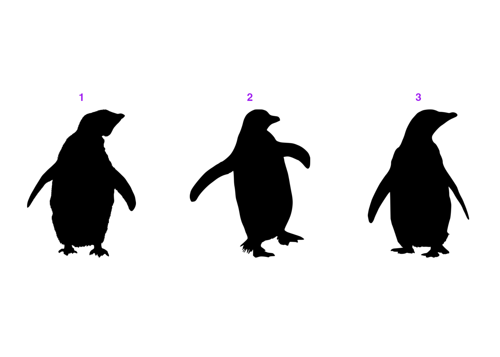
#2 looks like a happy chappy, let’s go with that silhouette:
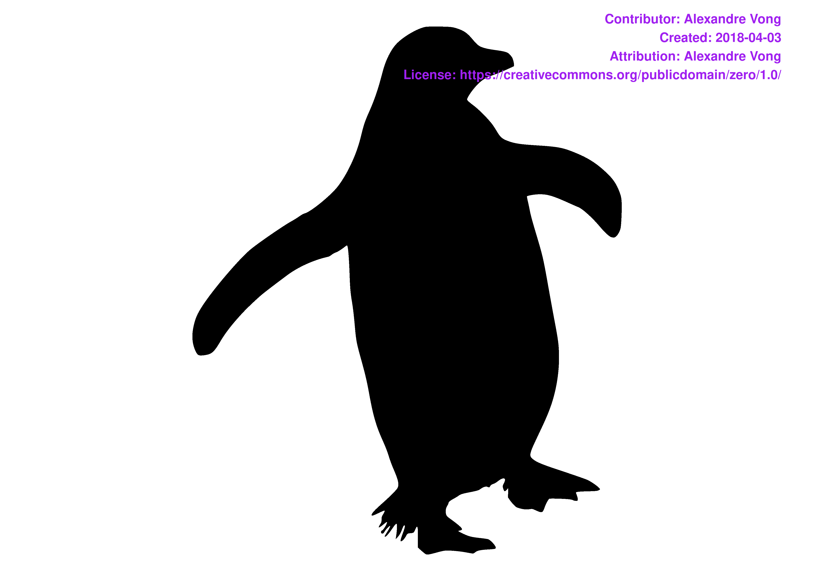
You may have noticed in the preview that the silhouette was a little slanted. Let’s rotate it clockwise just a smidgen:
That’s looking better.
Now, let’s draft the plot that we want to make. In this case, we’re interested in whether penguins’ flipper length generally increases in line with bill length within each species:
Tip: ggplot2’s facet_wrap() function splits a dataset into multiple panels based on a categorical variable and arranges them in a compact 2D grid. We can make use of this here for visualising each of our species, creating a plot panel for each.
Tip: In base R, generating multiple plots means making a separate call to plot() for each species. We can avoid repeating ourselves by using a for loop to draw one panel per species, after setting up a three-row layout with par().
# Calculate shared axis limits so all panels are comparable
xlim <- range(penguins_subset$bill_length_mm)
ylim <- range(penguins_subset$flipper_length_mm)
# Set up the plot area (3 rows, 1 column)
par(mfrow = c(3, 1), mar = c(4, 4, 2, 1))
# Loop over the species and create a plot for each one
for (sp in levels(penguins_subset$species)) {
# Subset the data to the current species and plot it
with(
subset(penguins_subset, species == sp),
plot(bill_length_mm, flipper_length_mm,
xlim = xlim, ylim = ylim,
xlab = "Bill length (mm)", ylab = "Flipper length (mm)",
main = sp)
)
}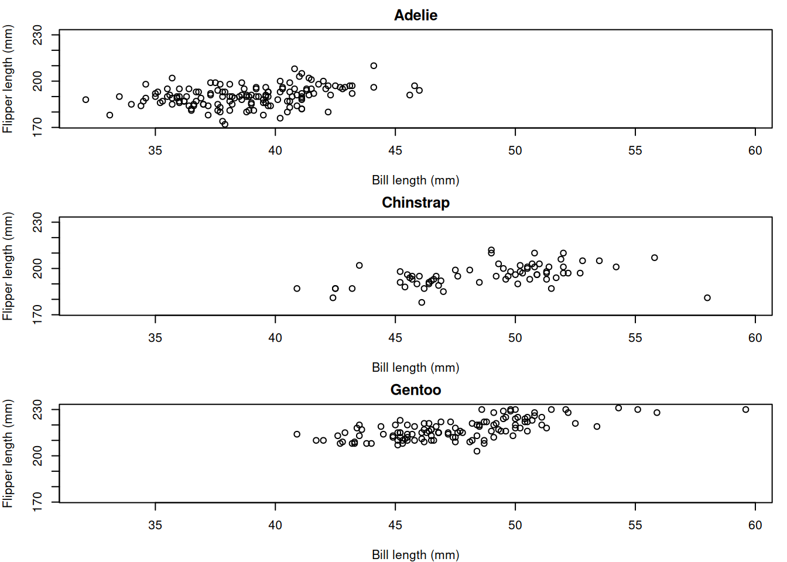
That’s not a bad basic plot and we can definitely see a general trend, but we can make it nicer by adding a penguin silhouette. Sadly, we don’t have a separate silhouette for each species (although we could make one…), so we’ll place a single silhouette in the top panel using the geom_phylopic (ggplot2) and add_phylopic_base() (base R) functions. Note that the x and y arguments specify the centre of the silhouette, and the height argument specifies how tall it is, in the units of the y-axis.
# Create object for plotting penguin
silhouette_df <- data.frame(x = 59, y = 215, species = "Adelie")
ggplot(penguins_subset) +
geom_point(aes(x = bill_length_mm, y = flipper_length_mm)) +
geom_phylopic(data = silhouette_df, aes(x = x, y = y), height = 30,
img = penguin_rot) +
labs(x = "Bill length (mm)", y = "Flipper length (mm)") +
facet_wrap(~species, ncol = 1) +
theme_bw(base_size = 15)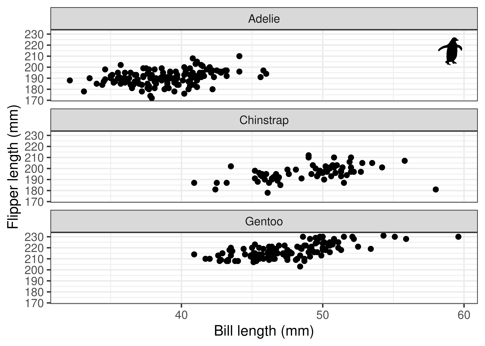
# Set up the plot area (3 rows, 1 column)
par(mfrow = c(3, 1), mar = c(4, 4, 2, 1))
# Loop over the species and create a plot for each one
for (sp in levels(penguins_subset$species)) {
# Subset the data to the current species and plot it
with(
subset(penguins_subset, species == sp),
plot(bill_length_mm, flipper_length_mm,
xlim = xlim, ylim = ylim,
xlab = "Bill length (mm)", ylab = "Flipper length (mm)",
main = sp)
)
# Add the silhouette to the top panel only
if (sp == levels(penguins_subset$species)[1]) {
add_phylopic_base(img = penguin_rot, x = 59, y = 215, height = 30)
}
}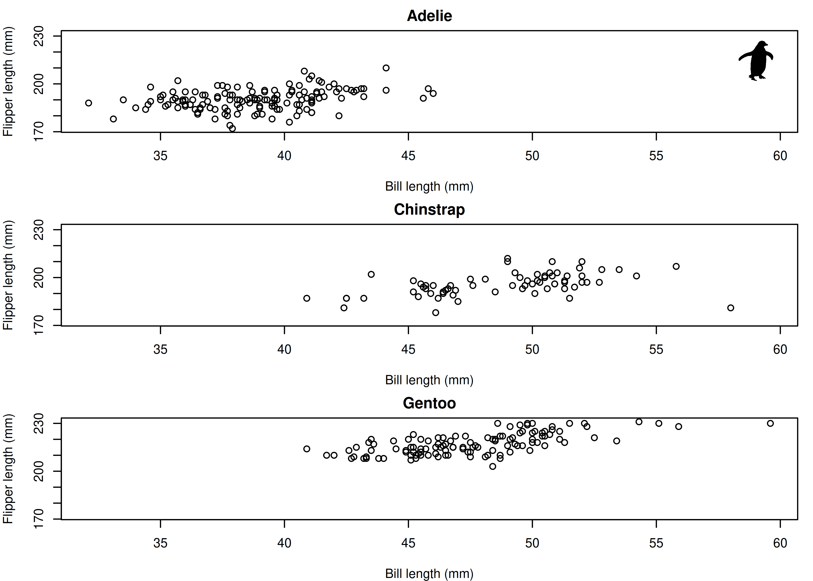
Isn’t that nifty! But we can go a step further: what if we used little penguins instead of points? We can do this with geom_phylopic() (ggplot2) and add_phylopic_base() (base R). Since we want the same image for every x-y pair, we can specify img = penguin_rot once more:
# Set up the plot area (3 rows, 1 column)
par(mfrow = c(3, 1), mar = c(4, 4, 2, 1))
# Loop over the species and create a plot for each one
for (sp in levels(penguins_subset$species)) {
# Subset the data to the current species
species_data <- subset(penguins_subset, species == sp)
# Create an empty plot with the shared axis limits
plot(NA, xlim = xlim, ylim = ylim,
xlab = "Bill length (mm)", ylab = "Flipper length (mm)",
main = sp)
# Add a penguin silhouette at each x-y pair instead of a point
add_phylopic_base(img = penguin_rot,
x = species_data$bill_length_mm,
y = species_data$flipper_length_mm)
}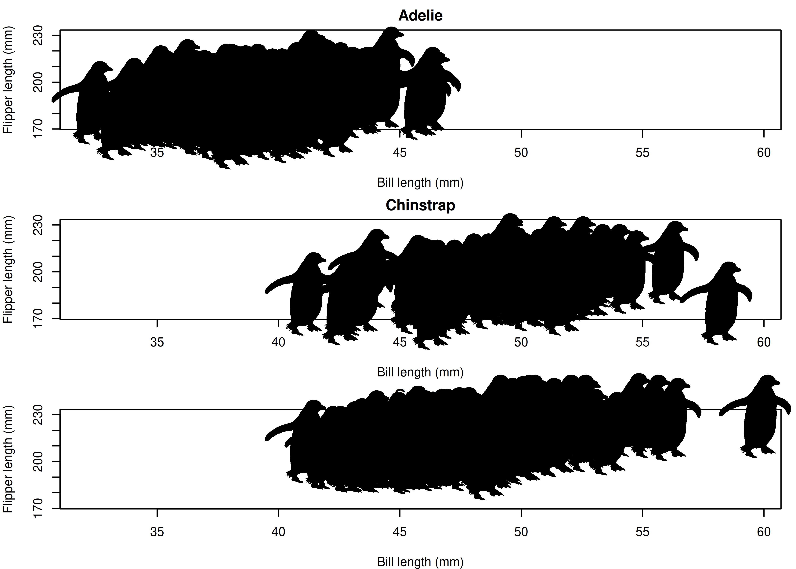
Well… those silhouettes are perhaps a little… big! By default, geom_phylopic() and add_phylopic_base() makes each silhouette as tall as the plot, which is far too large here. Instead, we can specify a height or width to use (in y-axis or x-axis units, respectively):
# Set up the plot area (3 rows, 1 column)
par(mfrow = c(3, 1), mar = c(4, 4, 2, 1))
# Loop over the species and create a plot for each one
for (sp in levels(penguins_subset$species)) {
# Subset the data to the current species
species_data <- subset(penguins_subset, species == sp)
# Create an empty plot with the shared axis limits
plot(NA, xlim = xlim, ylim = ylim,
xlab = "Bill length (mm)", ylab = "Flipper length (mm)",
main = sp)
# Add a penguin silhouette at each x-y pair instead of a point
add_phylopic_base(img = penguin_rot,
x = species_data$bill_length_mm,
y = species_data$flipper_length_mm,
height = 6)
}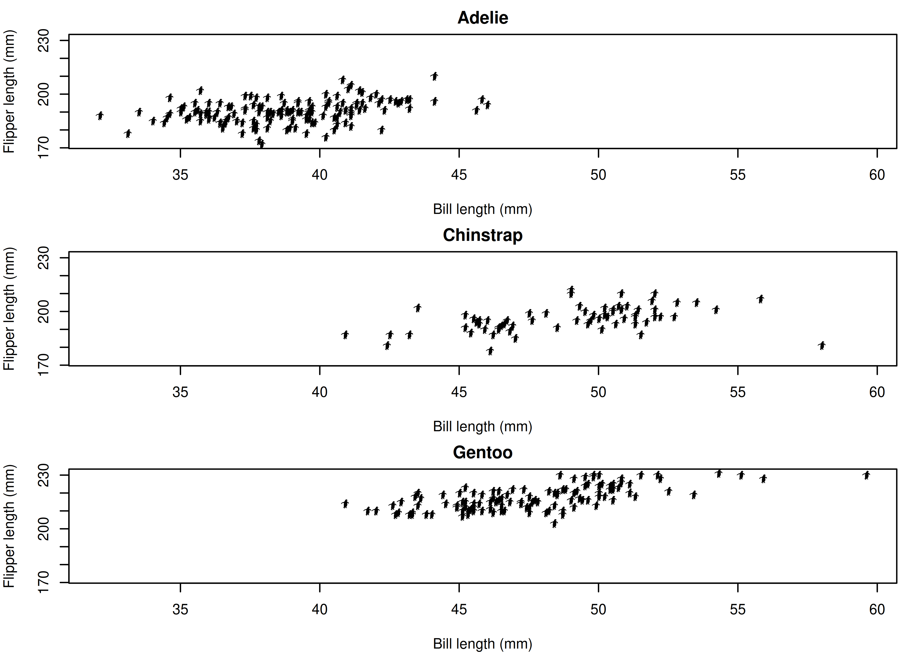
That’s more like it.
So far we have set the silhouette size by hand. Instead, we could map the height to another variable in our data, and rphylopic will scale the values for us automatically.
Your task: Make a plot with the size of the silhouettes relative to the penguins’ body masses (body_mass_g).
Exercise 6: Solution
With geom_phylopic(), rphylopic automatically rescales values between 1 and 6. So, we can just pass height = body_mass_g.
Hint: If the defaults don’t suit your data, you can also adjust the scaling with scale_height_continuous() (or scale_width_continuous() for the width aesthetic), used just like scale_size_continuous(). We’ll use the defaults here:
With add_phylopic_base(), rphylopic does not automatically rescale values. So, we have to manually adjust our scaling. Here, we use height = log10(body_mass_g).
# Set up the plot area (3 rows, 1 column)
par(mfrow = c(3, 1), mar = c(4, 4, 2, 1))
# Loop over the species and create a plot for each one
for (sp in levels(penguins_subset$species)) {
# Subset the data to the current species
species_data <- subset(penguins_subset, species == sp)
# Create an empty plot with the shared axis limits
plot(NA, xlim = xlim, ylim = ylim,
xlab = "Bill length (mm)", ylab = "Flipper length (mm)",
main = sp)
# Add a penguin silhouette at each x-y pair instead of a point
add_phylopic_base(img = penguin_rot,
x = species_data$bill_length_mm,
y = species_data$flipper_length_mm,
# Manually scale by the maximum for all species data
height = (species_data$body_mass_g /
max(penguins_subset$body_mass_g)) * 10)
}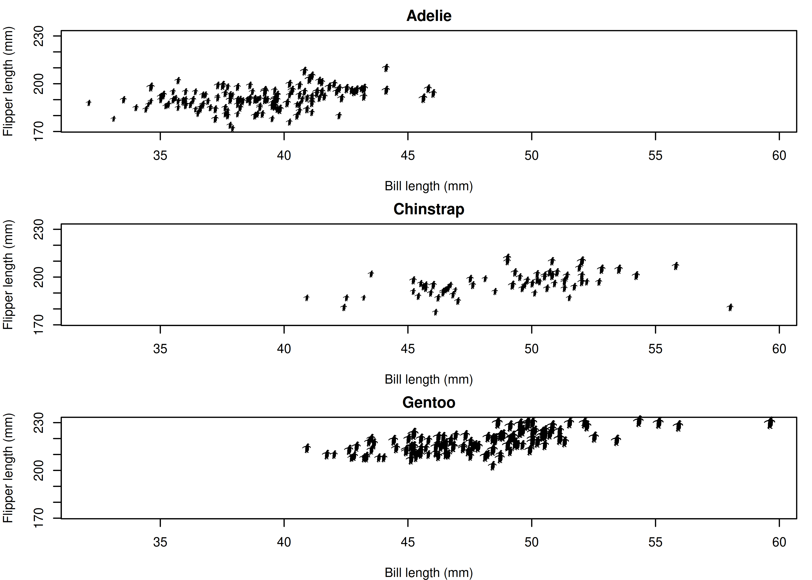
Your task: Now that you’ve varied the size of the penguins based on their body mass, make a plot where you also vary the colour fill of penguins based on their sex.
Exercise 7: Solution
Tip: the default for geom_phylopic() is to not display a legend, so we need to set show.legend = TRUE. However, we only want a legend for the fill colours, so we use guide = "none" for the size scale. We also want to show the fill color in the legend, so we need to override the shape:
ggplot(penguins_subset) +
geom_phylopic(img = penguin_rot,
aes(x = bill_length_mm, y = flipper_length_mm,
height = body_mass_g, fill = sex),
show.legend = TRUE) +
labs(x = "Bill length (mm)", y = "Flipper length (mm)") +
scale_size_continuous(guide = "none") +
scale_fill_manual("Sex", values = c("orange", "blue"),
labels = c("Female", "Male"),
guide = guide_legend(override.aes = list(shape = 21))) +
facet_wrap(~species, ncol = 1) +
theme_bw(base_size = 15) +
theme(legend.position = "inside",
legend.position.inside = c(0.9, 0.9),
legend.key.size = unit(0.5, "cm"),
legend.text = element_text(size = 11),
legend.title = element_blank())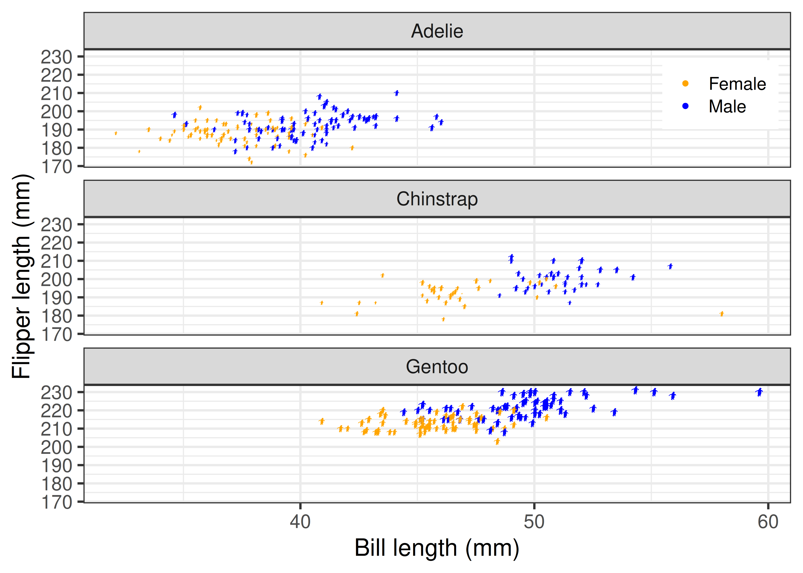
Tip: By default base plot() does not add a legend to a plot. We need to define it using legend().
# Set up the plot area (3 rows, 1 column)
par(mfrow = c(3, 1), mar = c(4, 4, 2, 1))
# Loop over the species and create a plot for each one
for (sp in levels(penguins_subset$species)) {
# Subset the data to the current species
species_data <- subset(penguins_subset, species == sp)
# Create an empty plot with the shared axis limits
plot(NA, xlim = xlim, ylim = ylim,
xlab = "Bill length (mm)", ylab = "Flipper length (mm)",
main = sp)
# Add a penguin silhouette at each x-y pair instead of a point
add_phylopic_base(img = penguin_rot,
x = species_data$bill_length_mm,
y = species_data$flipper_length_mm,
# Manually scale by the maximum for all species data
height = (species_data$body_mass_g /
max(penguins_subset$body_mass_g)) * 10,
# Set fill colour
fill = ifelse(species_data$sex == "male", "blue", "orange"))
}
# Add a legend
legend("bottomright", legend = c("Female", "Male"), pch = 20,
col = c("orange", "blue"), bty = "n")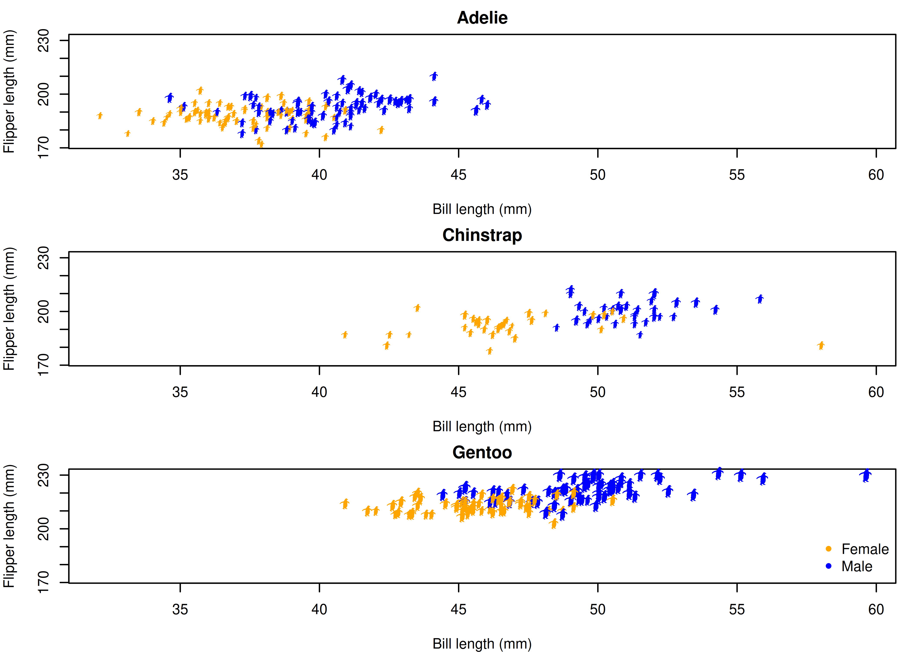
In much the same way as generic x-y plotting, the rphylopic package can be used to plot organism silhouettes on a map. That is, to plot data points (e.g. species occurrences) as silhouettes. We provide an example here of how this might be achieved. For this application, we use the example occurrence dataset of early (Carboniferous to Early Triassic) tetrapods from the palaeoverse R package to visualise the geographic distribution of Diplocaulus fossils.
First, let’s load the required libraries and data:
Then we’ll subset our occurrences to only those for Diplocaulus:
Before we can plot our fossil occurrences on a map, we need to prepare two spatial datasets. First, we use ne_countries() from the rnaturalearth package to download a world map of country boundaries from Natural Earth, returned as an sf (simple features) object. Second, we convert our Diplocaulus occurrence data from a standard data frame into an sf object using st_as_sf(). This tells R which columns hold the coordinates and which coordinate reference system they use; crs = 4326 specifies WGS84, the standard longitude/latitude system. Doing this means R treats our occurrences as true spatial points rather than just numbers, ensuring they overlay correctly on the world map. With both layers in the same format and coordinate system, we can then plot them together.
Now, let’s plot those occurrences on a world map. Note that we use alpha = 0.75 in case there are multiple occurrences in the same place. That way, the darker the fill colour, the more occurrences in that geographic location.
Now let’s replace those points with silhouettes.
Note that while we use the genus name as the name aesthetic here, we easily could have done name = "Diplocaulus" outside of the aes() call instead. However, if we were plotting occurrences of multiple genera, we’d definitely want to plot them as different silhouettes using name = genus within the aes() call.
Note that we use name = diplocaulus$genus here. However, if we were plotting occurrences of multiple genera, we’d definitely want to plot them as different silhouettes using name = diplocaulus$genus.
When projecting data, note that the y-axis limits will change to projected limits. For example, in the Robinson projection, the y-axis limits are roughly -8,600,000 and 8,600,000 in projected coordinates. Therefore, you may need to adjust the height argument/aesthetic accordingly when projecting maps and data.
# Target projection (Robinson)
crs_rob <- st_crs("ESRI:54030")
# Set up a bounding box
bbox <- st_graticule(crs = 4326,
lat = c(-89.9, 89.9),
lon = c(-179.9, 179.9)) |>
st_transform(crs_rob)
# Project world
proj_world <- world |>
st_transform(crs_rob)
# Project lng/lat (WGS84) to Robinson
proj_diplocaulus <- diplocaulus |>
st_transform(crs_rob)
# Plotting
ggplot(proj_world) +
geom_sf(fill = "lightgray", color = "darkgrey", linewidth = 0.1) +
geom_phylopic(data = proj_diplocaulus,
aes(x = st_coordinates(proj_diplocaulus)[ ,1],
y = st_coordinates(proj_diplocaulus)[ ,2],
name = genus),
height = 8E5, alpha = 0.75, fill = "blue") +
geom_sf(data = bbox) +
theme_void() +
coord_sf()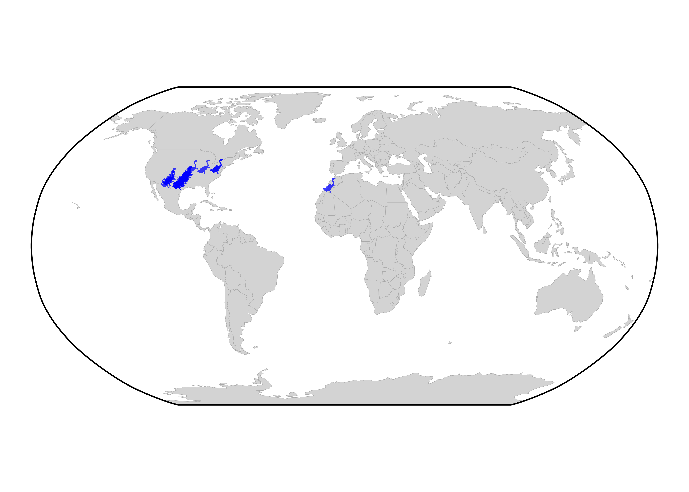
Note, we could have also changed the projection of the map and data using the crs and default_crs arguments in coord_sf().
# Target projection (Robinson)
crs_rob <- st_crs("ESRI:54030")
# Set up a bounding box
bbox <- st_graticule(crs = 4326,
lat = c(-89.9, 89.9),
lon = c(-179.9, 179.9)) |>
st_transform(crs_rob)
# Project world
proj_world <- world |>
st_transform(crs_rob)
# Project lng/lat (WGS84) to Robinson
proj_diplocaulus <- diplocaulus |>
st_transform(crs_rob)
# Plotting
par(mar = c(0, 0, 0, 0))
# Map
plot(st_geometry(proj_world), col = "lightgrey", border = "darkgrey", lwd = 0.1)
# Bounding box
plot(st_geometry(bbox), col = "black", add = TRUE)
# Draw silhouettes (height is in projected units, i.e. metres)
add_phylopic_base(name = proj_diplocaulus$genus,
x = st_coordinates(proj_diplocaulus)[ ,1],
y = st_coordinates(proj_diplocaulus)[ ,2],
height = 8E5, fill = "blue", alpha = 0.75)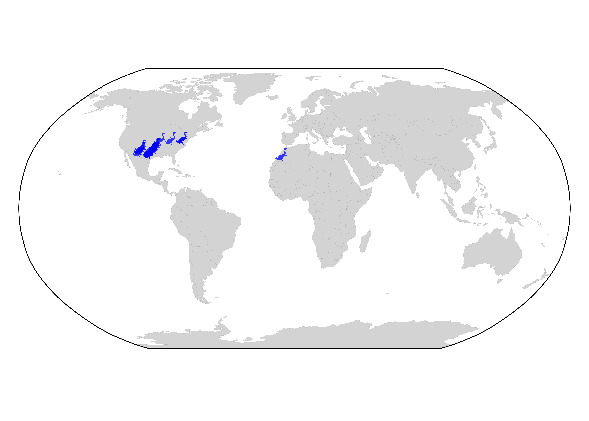
PhyloPic silhouettes are also a handy way to label taxonomic information. In this example, we’ll use them within a phylogenetic framework. The tree comes from the phytools package and spans the vertebrates, with 11 distantly related taxa at its tips. Unless you’re a vertebrate specialist, you probably won’t recognise all of their scientific names, so we’ll replace the tip labels with silhouettes. That makes the tree easier to read at a glance, which is a big advantage for teaching, presentations, and figures aimed at a broad audience.
To begin, load the required libraries and data:
# Make a data.frame for the PhyloPic names
vertebrate_data <- data.frame(species = vertebrate.tree$tip.label, uuid = NA)
# Try to get PhyloPic UUIDs for the species names
vertebrate_data$uuid <- sapply(vertebrate.tree$tip.label,
function(x) {
tryCatch(get_uuid(x), error = function(e) NA)
})
vertebrate_data species uuid
1 Carcharodon_carcharias 00f208a3-887d-4ae8-838c-2124f53b9fc1
2 Carassius_auratus abcb9d2c-db21-4b63-b8e7-b770b11ad288
3 Latimeria_chalumnae 12c38a8a-6d68-4af3-ada3-05cafdfc25c2
4 Homo_sapiens 9c6af553-390c-4bdd-baeb-6992cbc540b1
5 Lemur_catta 8a187391-82a3-4d9b-a402-3a310bf7dc38
6 Myotis_lucifugus <NA>
7 Sus_scrofa 14a64a2f-166e-4bb4-b108-adc085cbcb7a
8 Megaptera_novaeangliae 012afb33-55c3-4fc6-9ae3-3a91fda32fd5
9 Bos_taurus dc5c561e-e030-444d-ba22-3d427b60e58a
10 Iguana_iguana 5dec03d9-66a2-4033-b1a9-6dbb3485199f
11 Turdus_migratorius 83b29bf0-f4f9-412d-8b3b-7faf4febd69dWe can use a vectorised version of the get_uuid() function to retrieve UUID values for all of the species at once. However, just in case we get an error, we wrap the get_uuid() call in a tryCatch() call. This way, we should get either a UUID or NA for each species:
# Make a data.frame for the PhyloPic names
vertebrate_data <- data.frame(species = vertebrate.tree$tip.label, uuid = NA)
# Try to get PhyloPic UUIDs for the species names
vertebrate_data$uuid <- sapply(vertebrate.tree$tip.label,
function(x) {
tryCatch(get_uuid(x), error = function(e) NA)
})
vertebrate_data species uuid
1 Carcharodon_carcharias 00f208a3-887d-4ae8-838c-2124f53b9fc1
2 Carassius_auratus abcb9d2c-db21-4b63-b8e7-b770b11ad288
3 Latimeria_chalumnae 12c38a8a-6d68-4af3-ada3-05cafdfc25c2
4 Homo_sapiens 9c6af553-390c-4bdd-baeb-6992cbc540b1
5 Lemur_catta 8a187391-82a3-4d9b-a402-3a310bf7dc38
6 Myotis_lucifugus <NA>
7 Sus_scrofa 14a64a2f-166e-4bb4-b108-adc085cbcb7a
8 Megaptera_novaeangliae 012afb33-55c3-4fc6-9ae3-3a91fda32fd5
9 Bos_taurus dc5c561e-e030-444d-ba22-3d427b60e58a
10 Iguana_iguana 5dec03d9-66a2-4033-b1a9-6dbb3485199f
11 Turdus_migratorius 83b29bf0-f4f9-412d-8b3b-7faf4febd69dUh-oh, PhyloPic doesn’t currently have a silhouette for Myotis lucifugus (the little brown bat). Luckily, we wrapped the lookup in tryCatch(), so the code returned NA for this species instead of stopping. Given the coarse resolution of this phylogeny, we probably don’t need a silhouette for that exact species. A silhouette of a close relative will do, so we’ll use one for its subfamily, Vespertilioninae:
# Make a data.frame for the PhyloPic names
vertebrate_data <- data.frame(species = vertebrate.tree$tip.label, uuid = NA)
# Try to get PhyloPic UUIDs for the species names
vertebrate_data$uuid <- sapply(vertebrate.tree$tip.label,
function(x) {
tryCatch(get_uuid(x), error = function(e) NA)
})
vertebrate_data species uuid
1 Carcharodon_carcharias 00f208a3-887d-4ae8-838c-2124f53b9fc1
2 Carassius_auratus abcb9d2c-db21-4b63-b8e7-b770b11ad288
3 Latimeria_chalumnae 12c38a8a-6d68-4af3-ada3-05cafdfc25c2
4 Homo_sapiens 9c6af553-390c-4bdd-baeb-6992cbc540b1
5 Lemur_catta 8a187391-82a3-4d9b-a402-3a310bf7dc38
6 Myotis_lucifugus <NA>
7 Sus_scrofa 14a64a2f-166e-4bb4-b108-adc085cbcb7a
8 Megaptera_novaeangliae 012afb33-55c3-4fc6-9ae3-3a91fda32fd5
9 Bos_taurus dc5c561e-e030-444d-ba22-3d427b60e58a
10 Iguana_iguana 5dec03d9-66a2-4033-b1a9-6dbb3485199f
11 Turdus_migratorius 83b29bf0-f4f9-412d-8b3b-7faf4febd69dWe’re not keen on the default boar silhouette either, so let’s pick a different one. The pick_phylopic() function lets us browse the available silhouettes and choose the one we like best. We can then extract the UUID from the object’s attributes:
# Make a data.frame for the PhyloPic names
vertebrate_data <- data.frame(species = vertebrate.tree$tip.label, uuid = NA)
# Try to get PhyloPic UUIDs for the species names
vertebrate_data$uuid <- sapply(vertebrate.tree$tip.label,
function(x) {
tryCatch(get_uuid(x), error = function(e) NA)
})
vertebrate_data species uuid
1 Carcharodon_carcharias 00f208a3-887d-4ae8-838c-2124f53b9fc1
2 Carassius_auratus abcb9d2c-db21-4b63-b8e7-b770b11ad288
3 Latimeria_chalumnae 12c38a8a-6d68-4af3-ada3-05cafdfc25c2
4 Homo_sapiens 9c6af553-390c-4bdd-baeb-6992cbc540b1
5 Lemur_catta 8a187391-82a3-4d9b-a402-3a310bf7dc38
6 Myotis_lucifugus <NA>
7 Sus_scrofa 14a64a2f-166e-4bb4-b108-adc085cbcb7a
8 Megaptera_novaeangliae 012afb33-55c3-4fc6-9ae3-3a91fda32fd5
9 Bos_taurus dc5c561e-e030-444d-ba22-3d427b60e58a
10 Iguana_iguana 5dec03d9-66a2-4033-b1a9-6dbb3485199f
11 Turdus_migratorius 83b29bf0-f4f9-412d-8b3b-7faf4febd69d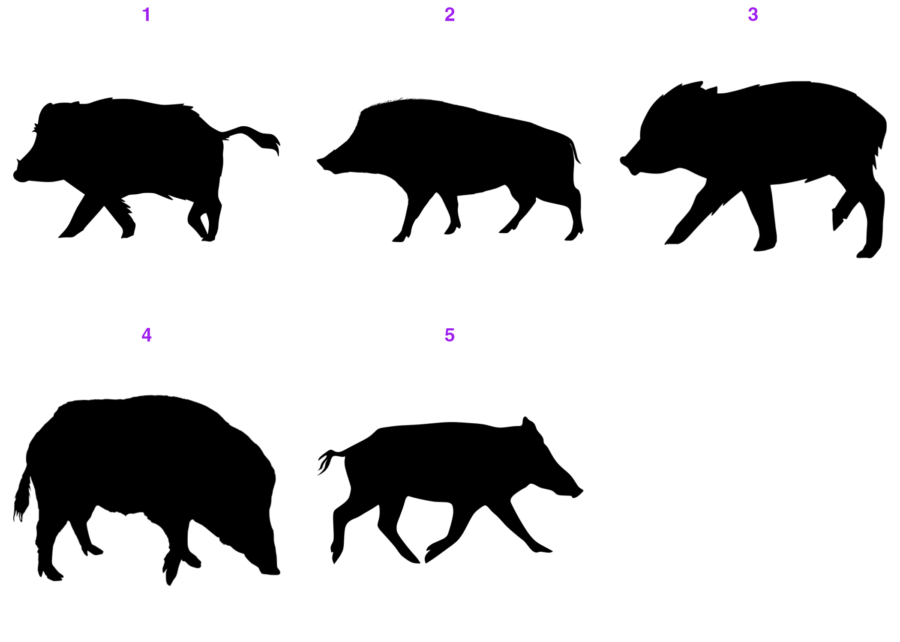
We like the look of piggy #4:
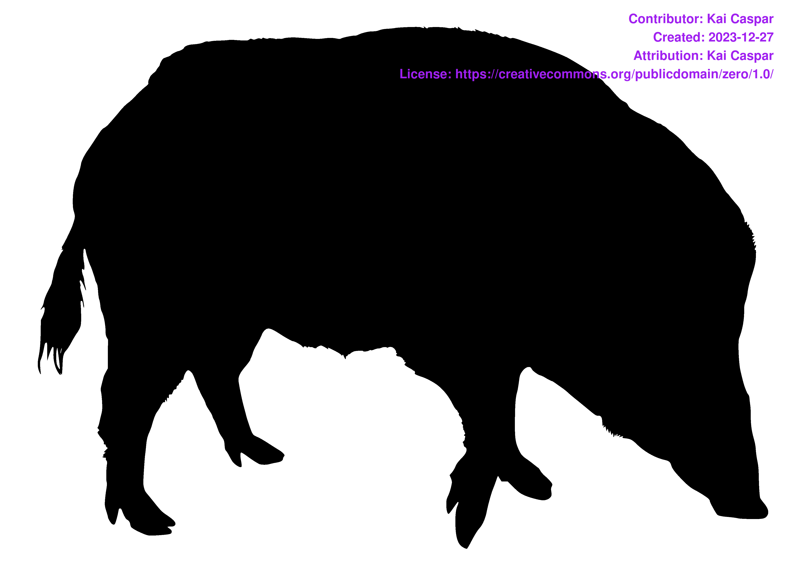
We now have our phylogeny and our UUIDs, so we could create the figure straight away. First, though, a quick aside about speed.
The time that geom_phylopic() and the other rphylopic visualisation functions take depends on the number of unique names or UUIDs, not on the number of silhouettes you plot. For each unique name, the function has to contact PhyloPic, download the silhouette, and convert it so it can be added to the plot. If you’re plotting many different silhouettes, this can take a while.
If you’ll reuse the same silhouettes across several figures, we strongly recommend fetching them yourself with get_phylopic() or pick_phylopic() and saving them as image objects in your R environment. You can then pass these objects to the visualisation functions using the img argument (or aesthetic), so PhyloPic doesn’t need to be contacted each time you make a plot.
Let’s follow this advice and get image objects for our 11 species before making the figure. As we found these UUIDs with get_uuid(), we know they are valid, so we don’t need to catch errors this time.
Hmm… that’s a bit boring. Let’s add a geological timescale!
Using the deeptime R package, we can add the geological timescale to the background of our plot with coord_geo_polar(). Note that the time axis must be reversed with revts() for this to work, as coord_geo_polar() expects time to run in the opposite direction to how it’s usually plotted. Geologists and palaeontologists, after all, tend to root themselves in the past!
library(deeptime)
# Plot the tree with a geological timescale in the background
revts(ggtree(vertebrate.tree, linewidth = 1)) +
scale_x_continuous(breaks = seq(-500, 0, 100),
labels = seq(500, 0, -100),
limits = c(-500, 0),
expand = expansion(mult = 0)) +
scale_y_continuous(guide = NULL) +
coord_geo_radial(dat = "periods") +
theme_classic()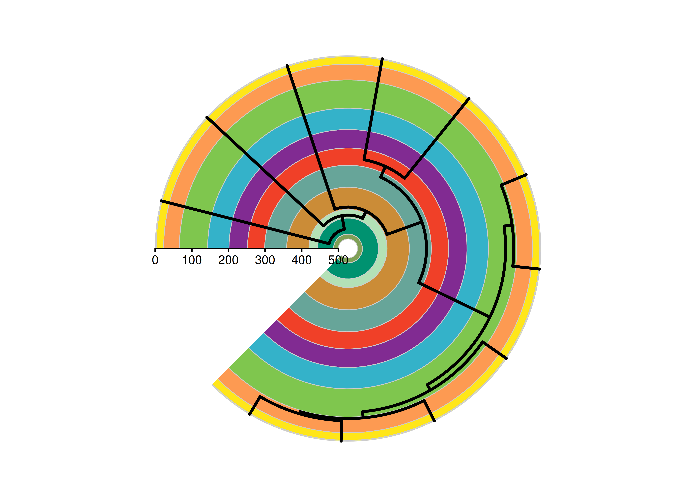
Using the palaeoverse R package, we can add the geological timescale as an axis with axis_geo_phylo(). Note that time runs from left-to-right (from past to present) here. Geologists and palaeontologists, after all, tend to root themselves in the past!
That’s looking a lot prettier! Let’s go ahead and add our silhouettes now.
When using ggplot2, we first attach the vertebrate_data object with the %<+% operator from ggtree. We can then use geom_phylopic() to plot our silhouettes from the svg column.
revts(ggtree(vertebrate.tree, linewidth = 1)) %<+% vertebrate_data +
geom_phylopic(aes(img = svg), height = 25) +
scale_x_continuous(breaks = seq(-500, 0, 100),
labels = seq(500, 0, -100),
limits = c(-500, 0),
expand = expansion(mult = 0)) +
scale_y_continuous(guide = NULL) +
coord_geo_radial(dat = "periods") +
theme_classic()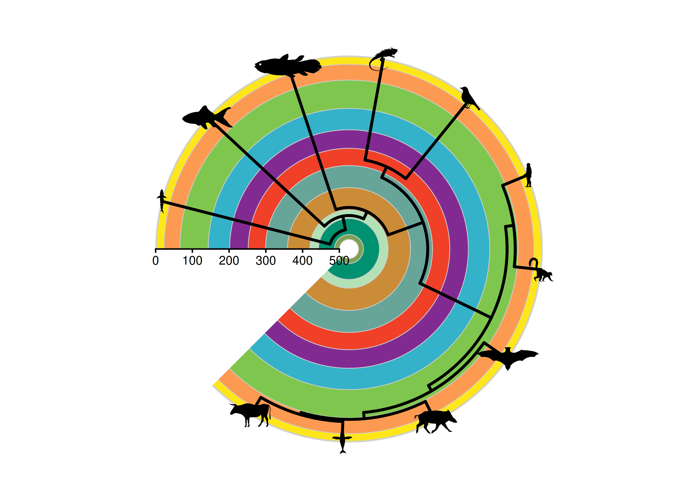
When using base R, we can add silhouettes to our tree with add_phylopic_tree(), a wrapper of add_phylopic_base() designed for phylogenetic trees. Note that although all of the tips may appear to sit at an x-axis value of 0, this is a quirk of axis_geo_phylo(). In reality, the left end of the x-axis is 0 and the right end is the total height of the tree. Fortunately, add_phylopic_tree() works out the x and y coordinates of the silhouettes for us, so there’s no need for any funny maths.
Note that only a single height is specified and aspect ratio is always maintained, hence why the silhouettes all have the same height but different widths. Let’s fix some of the silhouettes by rotating them 90 degrees:
And now the finished product:
revts(ggtree(vertebrate.tree, linewidth = 1)) %<+% vertebrate_data +
geom_phylopic(aes(img = svg), height = 25) +
scale_x_continuous(breaks = seq(-500, 0, 100),
labels = seq(500, 0, -100),
limits = c(-500, 0),
expand = expansion(mult = 0)) +
scale_y_continuous(guide = NULL) +
coord_geo_radial(dat = "periods") +
theme_classic()Not bad, not bad at all!
The ggraph package extends ggplot2 to network graphs, and geom_phylopic() can be dropped into a ggraph() plot to render nodes as PhyloPic silhouettes. This is especially useful for food webs, taxonomic networks, and other graph-structured data where nodes represent organisms.
Let’s demonstrate with a simple Permian food web. First, we set up the network:
# Load libraries
library(rphylopic)
library(ggplot2)
library(igraph)
library(ggraph)
# Define a simple food web among Permian tetrapods and a Permian fish
food_web <- data.frame(
from = c("Eryops", "Diplocaulus", "Diplocaulus", "Eryops"),
to = c("Dimetrodon", "Dimetrodon",
"Xenacanthus decheni", "Xenacanthus decheni")
)
g <- graph_from_data_frame(food_web, directed = TRUE)# Load libraries
library(rphylopic)
library(igraph)
# Define the same Permian tetrapod food web
food_web <- data.frame(
from = c("Eryops", "Diplocaulus", "Diplocaulus", "Eryops"),
to = c("Dimetrodon", "Dimetrodon",
"Xenacanthus decheni", "Xenacanthus decheni")
)
g <- graph_from_data_frame(food_web, directed = TRUE)
layout <- layout_with_fr(g)Let’s now visualise that simple network:
Each vertex name in g corresponds to a taxonomic name we can pass to PhyloPic. Because geom_phylopic() accepts the name aesthetic, we can map vertex names directly to silhouettes. The x and y aesthetics are also inherited from the ggraph initialization, but still need to be defined explicitly.
set.seed(42)
ggraph(g, layout = "stress") +
geom_edge_link(arrow = arrow(length = unit(5, "mm"), type = "closed"),
end_cap = circle(15, "mm"),
color = "darkgrey") +
geom_phylopic(aes(x = x, y = y, name = name), height = 0.15) +
scale_x_continuous(expand = expansion(mult = 0.3)) +
scale_y_continuous(expand = expansion(mult = 0.3)) +
theme_void()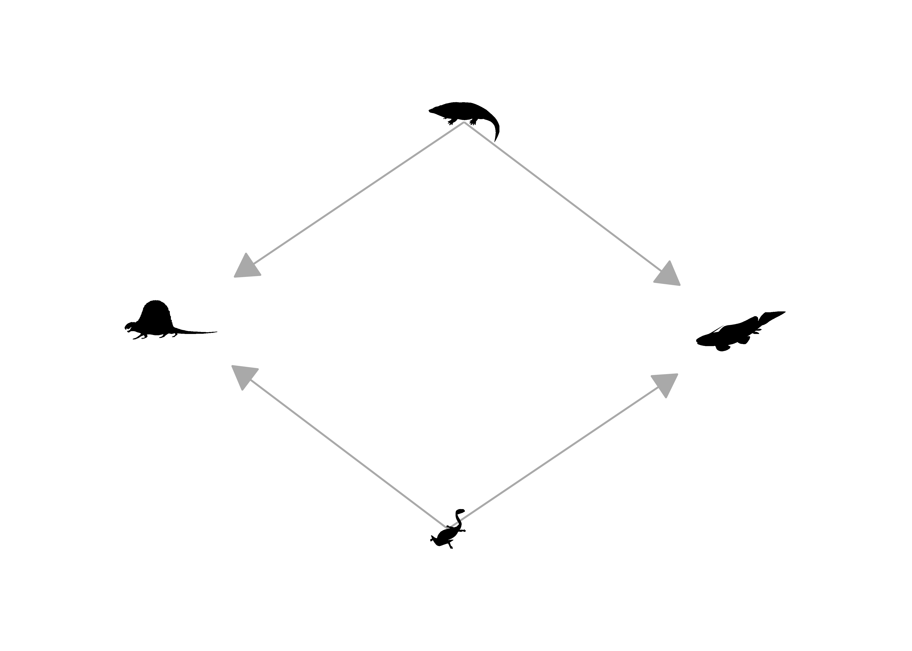
We can now render the graph with PhyloPic silhouettes as the nodes. The vertex names from V(g)$name are passed to the vertex.name argument, which rphylopic uses to look up silhouettes:
And add a little colour to our lives:
Many customisation options for your silhouettes are also available via geom_phylopic(), either as aesthetics (e.g. colour, angle) or as fixed arguments. For example, here we give each silhouette a different colour and apply a small fixed angle rotation:
set.seed(42)
ggraph(g, layout = "stress") +
geom_edge_link(arrow = arrow(length = unit(5, "mm"), type = "closed"),
end_cap = circle(15, "mm"),
color = "darkgrey") +
geom_phylopic(aes(x = x, y = y, name = name, colour = name), angle = 0.15, height = 0.15) +
scale_x_continuous(expand = expansion(mult = 0.3)) +
scale_y_continuous(expand = expansion(mult = 0.3)) +
theme_void()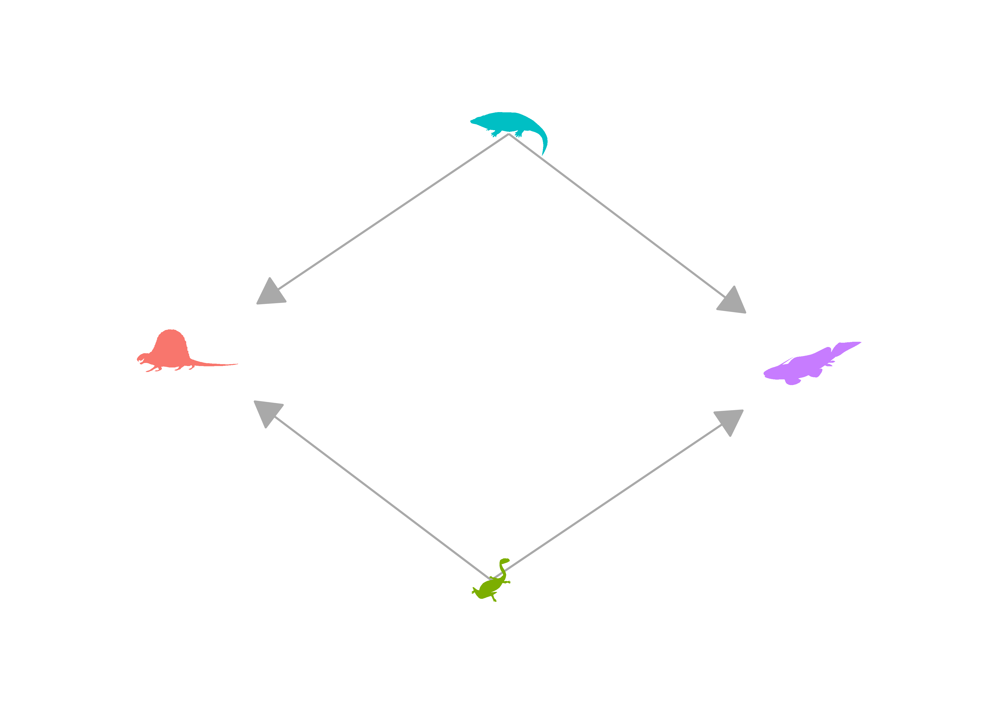
Many customisation options from add_phylopic_base() are also available through the vertex.* arguments. For example, here we give each silhouette a different colour and apply a small rotation:
plot(g, layout = layout,
vertex.shape = "phylopic",
vertex.name = V(g)$name,
vertex.size = 100,
vertex.color = rainbow(vcount(g)), # per-vertex fill color
vertex.angle = 15, # rotate all silhouettes 15 degrees
vertex.label = NA,
edge.arrow.size = 0.5,
xlim = c(-0.5, 0.5), ylim = c(-0.5, 0.5),
asp = 0)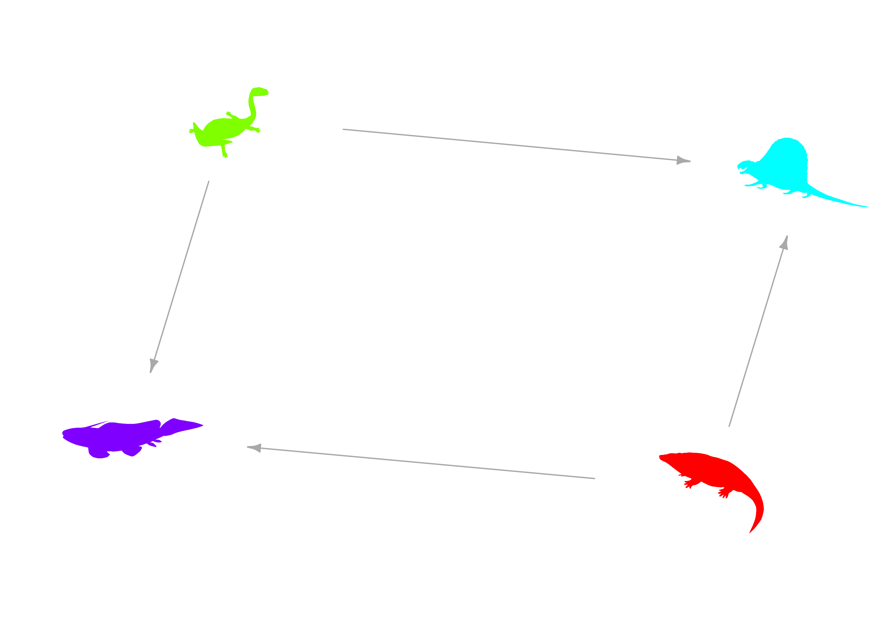